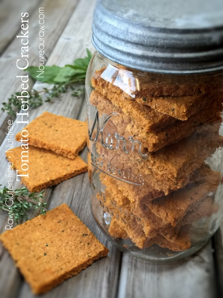
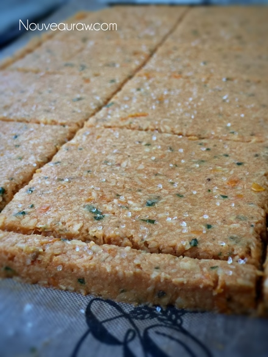
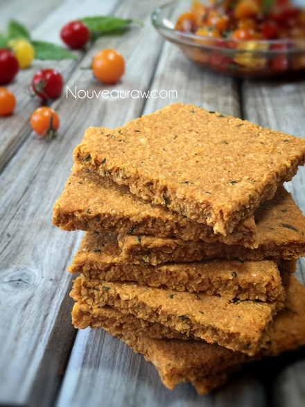
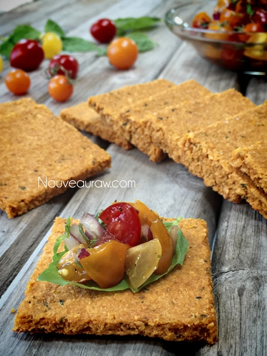

Tomato Herbed Crackers

~ raw, vegan, gluten-free, nut-free ~
Making homemade crackers is a project that sounds intimidating to most, but in general, it is one of the easiest things to throw together and then let the dehydrator do its magic. Coconut, tomato, and herbs… all dehydrated to a light, crispy perfection!
What we can expect…
Crisp… crunchy… sturdy… describes the texture beautifully. I relished the lingering rich and robust flavor of the tomato that tied in so well with the fresh thyme. A culinary match made in right in my very own kitchen. This too can happen in your very own kitchen when you pull together all the ingredients that I have outlined below. I am always thinking of you!
Nut-free – Grain-free – Seed-free – How can it be?
I have been working on a line of crackers for all my wonderful readers out there who are unable to enjoy, nuts, seeds, oats, and buckwheat. I sit here with my fingers, toes, and legs crossed that you are not allergic to coconut. For those of you who are, not to worry I have tons of cracker recipes and I am sure you can find one to suit your nutritional needs.
For inspiration, I wanted to share a tip with you… When making raw crackers you can get really creative with their shapes. Nothing like adding a little pizzazz to life. Score them into square crackers, rectangles, circles, or even into tiny cubes to be used as croutons. Just another great way to add variety to your weekly menu!
Yields 25 crackers
- 3 cups (269 g) shredded coconut
- 2 cups (357 g) yellow cherry tomatoes
- 3 Tbsp tomato powder
- 1 tsp Himalayan pink salt
- 2 tsp dried oregano
- 2 Tbsp fresh thyme
- 2 Tbsp fresh minced basil
Preparation:
- Blend the tomatoes, tomato powder, salt, oregano, thyme, and basil in a food processor, fitted with the “S” blade, until smooth.
- Add shredded coconut and process till mixed.
- If the batter feels too dry, add 1 Tbsp of water at a time until it reaches a spreadable texture. It all depends on how juicy the tomatoes are.
- Line the dehydrator tray with a non-stick teflex sheet.
- Spread the batter so it is 1/4″ thick.
- Make sure that you spread it evenly so it dries evenly.
- Wipe the edges clean.
- Score the crackers into desired shapes and sizes. You can use a pizza cutter or a long metal ruler to create the score marks.
- Dehydrate at 145 degrees (F) for 1 hour, then reduce to 115 degrees (F) and continue drying for up to 24 hours… until dry and crispy.
- Snap apart and let cool before storing in an airtight bag/container.
- They should last several weeks in the pantry and can be frozen for 1-2 months. If they start to soften due to humidity, throw them back in the dehydrator to crisp up.
- Try pairing with my Summer Savory Italian Salsa.
The Institute of Culinary Ingredients™
- To learn more about maple syrup by clicking (here).
- Why do I specify Ceylon cinnamon? Click (here) to learn why.
- What is Himalayan pink salt and does it really matter? Click (here) to read more about it.
Culinary Explanations:
- Why do I start the dehydrator at 145 degrees (F)? Click (here) to learn the reason behind this.
- When working with fresh ingredients it is important to taste test as you build a recipe. Learn why (here).
- Don’t own a dehydrator? Learn how to use your oven (here). I do however truly believe that it is a worthwhile investment. Click (here) to learn what I use.
I wanted to show you how thick the batter was as it went into the dehydrator.



© AmieSue.com